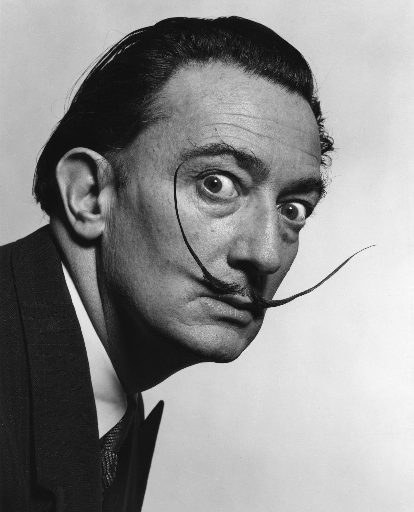
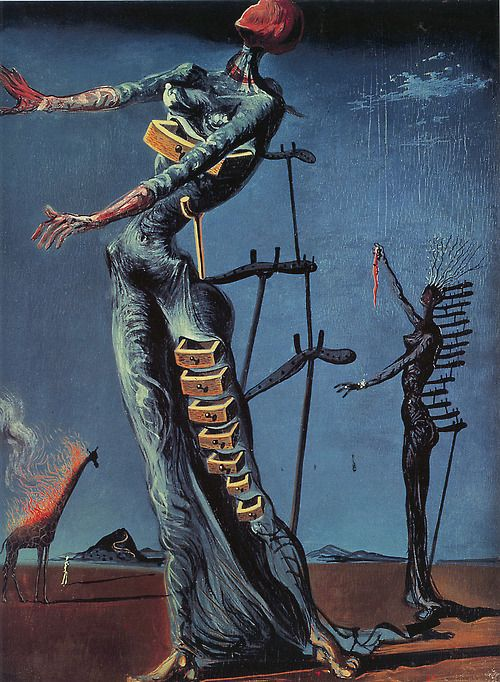
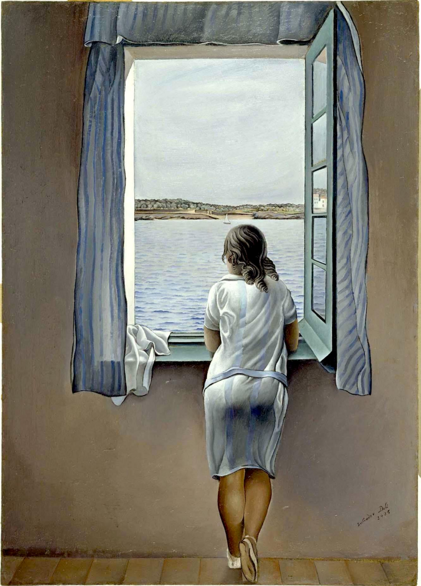
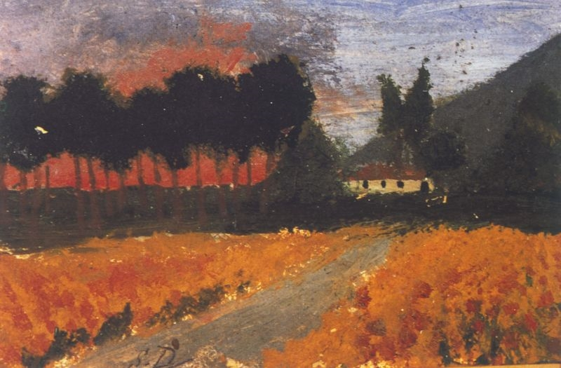
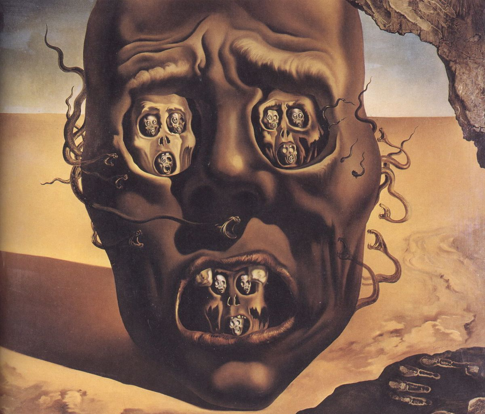

Salvador Felipe Jacinto Dalí i Domènech, marqués de Dalí de Púbol (Figueras, 11 de mayo de 1904-ibídem, 23 de enero de 1989), fue un pintor, escultor, grabador, escenógrafo y escritor español del siglo XX. Se le considera uno de los máximos representantes del surrealismo. Salvador Dalí es conocido por sus impactantes y oníricas imágenes surrealistas. Sus habilidades pictóricas se suelen atribuir a la influencia y admiración por el arte renacentista. También fue un experto dibujante. Los recursos plásticos dalinianos también abordaron el cine, la escultura y la fotografía, lo cual le condujo a numerosas colaboraciones con otros artistas audiovisuales. Tuvo la capacidad de acrisolar un estilo genuinamente personal y palpable al primer contacto, que en realidad era muy ecléctico y que «succionó» de innovaciones ajenas. Una de sus pinturas más célebres es La persistencia de la memoria (también conocida como Los relojes blandos), realizada en 1931. 
La persistencia de la memoria |
 |
|---|---|
|  | Jirafa en llamas |
Muchacha en la ventana |
 |
|  | vilabertran dali |
La Cara de la Guerra |
 |